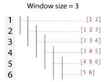
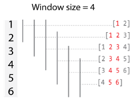
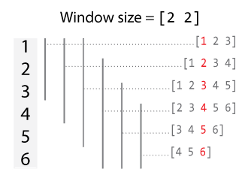
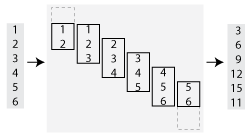
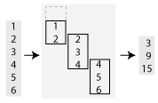
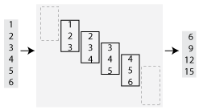
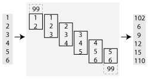

matlab.tall.blockMovingWindow
Apply moving window function and block reduction to padded blocks of data
Syntax
Description
tA = matlab.tall.blockMovingWindow(windowfcn,blockfcn,window,tX)blockfcn to complete windows of data and
windowfcn to incomplete windows of data near the edges.
window specifies the size of the sliding window. The result contains
the vertical concatenation of applying blockfcn and
windowfcn to these windows of data.
[,
where tA,tB,...] = matlab.tall.blockMovingWindow(windowfcn,blockfcn,window,tX,tY,...)windowfcn and blockfcn are function handles that
return multiple outputs, returns arrays tA, tB, ..., each corresponding
to one of the output arguments of windowfcn and
blockfcn. The inputs to windowfcn and
blockfcn are pieces of data from the arguments tX, tY,
.... This syntax has these requirements:
windowfcnandblockfcnmust return the same number of outputs as were requested frommatlab.tall.blockMovingWindow.Each output of
windowfcnandblockfcnmust be the same type as the first data inputtX.All outputs
tA,tB,...must have the same height.
[___] = matlab.tall.blockMovingWindow(___,
specifies additional options with one or more name-value pair arguments using any of the
previous syntaxes. For example, to adjust the step size between windows, you can specify
Name,Value)'Stride' and a scalar. Or to change the treatment of endpoints where
there are not enough elements to complete a window, you can specify
'EndPoints' and a valid option ('shrink',
'discard', or a numeric padding value).
Examples
Use matlab.tall.blockMovingWindow to calculate the moving mean of airline arrival and departure delays.
Create a datastore for the airlinesmall.csv data set and convert it into a tall array. The data contains information about arrival and departure times of US flights. Extract the ArrDelay and DepDelay variables, which are vectors of flight delays, to create a tall array containing the delays as separate columns.
varnames = {'ArrDelay', 'DepDelay'};
ds = tabularTextDatastore('airlinesmall.csv', 'TreatAsMissing', 'NA', ...
'SelectedVariableNames', varnames);
tt = tall(ds);
tX = [tt.ArrDelay tt.DepDelay]tX =
M×2 tall double matrix
8 12
8 1
21 20
13 12
4 -1
59 63
3 -2
11 -1
: :
: :
Use matlab.tall.blockMovingWindow to calculate the moving mean of the data in the first dimension with a window size of 10. Since windowfcn applies only to single windows of data, you can use the mean function to reduce the windows of data down into a matrix with one row. The blockfcn applies to whole blocks of data, so use the movmean function to calculate the mean of each full window of data in the blocks.
windowfcn = @(info,x) mean(x,1,'omitnan'); blockfcn = @(info,x) movmean(x,info.Window,1,'omitnan','EndPoints','discard'); A = matlab.tall.blockMovingWindow(windowfcn, blockfcn, 10, tX)
A =
M×N×... tall double array
? ? ? ...
? ? ? ...
? ? ? ...
: : :
: : :
Preview deferred. Learn more.
Gather a portion of the results into memory.
gather(A(1:10,:))
Evaluating tall expression using the Local MATLAB Session: - Pass 1 of 2: Completed in 0.83 sec - Pass 2 of 2: Completed in 2.1 sec Evaluation completed in 3.3 sec
ans = 10×2
10.8000 8.8000
18.8333 17.8333
16.5714 15.0000
15.8750 13.0000
14.4444 11.8889
13.2000 10.8000
14.0000 11.1000
13.5000 11.9000
15.3000 11.4000
19.7000 13.4000
Calculate moving statistics on the variables of a table.
Load the outages.csv data set as a tall table. The data contains information about power outages.
T = tall(readtable('outages.csv'))T =
1,468×6 tall table
Region OutageTime Loss Customers RestorationTime Cause
_____________ ________________ ______ __________ ________________ ___________________
{'SouthWest'} 2002-02-01 12:18 458.98 1.8202e+06 2002-02-07 16:50 {'winter storm' }
{'SouthEast'} 2003-01-23 00:49 530.14 2.1204e+05 NaT {'winter storm' }
{'SouthEast'} 2003-02-07 21:15 289.4 1.4294e+05 2003-02-17 08:14 {'winter storm' }
{'West' } 2004-04-06 05:44 434.81 3.4037e+05 2004-04-06 06:10 {'equipment fault'}
{'MidWest' } 2002-03-16 06:18 186.44 2.1275e+05 2002-03-18 23:23 {'severe storm' }
{'West' } 2003-06-18 02:49 0 0 2003-06-18 10:54 {'attack' }
{'West' } 2004-06-20 14:39 231.29 NaN 2004-06-20 19:16 {'equipment fault'}
{'West' } 2002-06-06 19:28 311.86 NaN 2002-06-07 00:51 {'equipment fault'}
: : : : : :
: : : : : :
Use matlab.tall.blockMovingWindow to apply a moving-window function to blocks of the tall table. Specify these options:
blkstatsas the block function to operate on complete blocks of data (included at the end of the example as a local function).A window size of 50 and a stride of 5.
EndPointsas'discard'to ignore incomplete windows of data. With this value, thewindowfcninput can be specified as empty[]since only complete windows of data are operated on.The input table has six variables, but the two outputs are double-precision vectors. Specify scalar doubles as the value for
OutputsLikeso that the function permits this change in data type and size.
[A, B] = matlab.tall.blockMovingWindow([], @blkstats, 50, T, 'Stride', 5, ... 'EndPoints', 'discard', 'OutputsLike', {1, 1});
Preview a few rows in the results.
[A,B] = gather(head(A),head(B))
Evaluating tall expression using the Local MATLAB Session: - Pass 1 of 2: Completed in 0.62 sec - Pass 2 of 2: Completed in 0.72 sec Evaluation completed in 2.1 sec
A = 8×1
254.0861
254.0861
340.3499
452.0191
464.8524
471.9737
464.8524
464.8524
B = 8×1
105 ×
1.3447
1.0779
1.4227
1.4509
1.2888
1.2888
1.2308
1.3722
The blkstats function calculates the moving median value of the Loss and Customers table variables in the first dimension using the specified window size. The function applies the Stride value to reduce the size of the output, and then it returns the results as two vectors.
function [out1, out2] = blkstats(info, t) a = movmedian([t.Loss t.Customers], info.Window, 1, 'omitnan', 'EndPoints', 'discard'); a = a(1:info.Stride:end, :); out1 = a(:,1); out2 = a(:,2); end
Input Arguments
Function to apply to incomplete windows of data, specified as a function handle,
anonymous function, or []. windowfcn is invoked
once per incomplete window as the calculation moves over data in the tall dimension.
matlab.tall.blockMovingWindow applies
windowfcn only when 'EndPoints' has the default
value of 'shrink'. If you specify a different value for
'EndPoints', then set windowfcn to
[].
Each output of windowfcn must be the same type as the first data
input tX. You can use the 'OutputsLike' option to
return outputs of different data types.
The general functional signature of
windowfcn
is
[a, b, c, ...] = windowfcn(info, x, y, ...)
info input is a structure provided by
matlab.tall.blockMovingWindow that includes these fields:
Stride— Specified step size between windows (default: 1). Set this value with the'Stride'name-value pair.Window— Specified window size. Set this value with thewindowinput argument.
windowfcn must satisfy these requirements:
Input Arguments — The inputs
[x, y, z, ...]are blocks of data that fit in memory. The blocks are produced by extracting data from the respective tall array inputs[tX, tY, tZ, ...]. The inputs[x, y, z, ...]satisfy these properties:All of the inputs
[x, y, z, ...]have the same size in the first dimension.The blocks of data in
[x, y, z, ...]come from the same index in the tall dimension, assuming the tall array is nonsingleton in the tall dimension. For example, iftXandtYare nonsingleton in the tall dimension, then the first set of blocks might bex = tX(1:20000,:)andy = tY(1:20000,:).When the first dimension of any of
[tX, tY, tZ, ...]has a size of1, the corresponding block[x, y, z, ...]consists of all the data in that tall array.Applying
windowfcnmust result in a reduction of the input data to a scalar or a slice of an array of height 1.When the input is a matrix, N-D array, table, or timetable, applying
windowfcnmust result in a reduction of the input data in each of its columns or variables.
Output Arguments — The outputs
[a, b, c, ...]are blocks that fit in memory to be sent to the respective outputs[tA, tB, tC, ...]. The outputs[a, b, c, ...]satisfy these properties:All of the outputs
[a, b, c, ...]must have the same size in the first dimension.All of the outputs
[a, b, c, ...]are vertically concatenated with the respective results of previous calls towindowfcn.All of the outputs
[a, b, c, ...]are sent to the same index in the first dimension in their respective destination output arrays.
Functional Rules —
windowfcnmust satisfy this functional rule:F([inputs1; inputs2]) == [F(inputs1); F(inputs2)]: Applying the function to the concatenation of the inputs should be the same as applying the function to the inputs separately and then concatenating the results.
Example: A = matlab.tall.blockMovingWindow(@windowfcn, @blockfcn, 10,
tX)
Example: A = matlab.tall.blockMovingWindow([], @blockfcn, 10, tX,
'EndPoints', 'discard')
Data Types: function_handle
Function to apply to blocks of data, specified as a function handle or anonymous
function. blockfcn is applied to blocks of data that contain complete
windows of data. Thus, blockfcn must operate in a vectorized manner
on entire blocks of data and return output that has the proper size for the specified
window size and stride.
Each output of blockfcn must be the same type as the first data
input tX. You can use the 'OutputsLike' option to
return outputs of different data types.
matlab.tall.blockMovingWindow applies
blockfcn to blocks of data whenever the block contains only
complete windows:
For middle blocks when
'EndPoints'is set to'shrink'(default behavior). In this casewindowfcnoperates on the incomplete windows of data on the ends.For all blocks when
'EndPoints'is set to'discard'or a padding value.
The general functional signature of blockfcn
is
[a, b, c, ...] = blockfcn(info, bX, bY, bZ, ...)
info input is a structure provided by
matlab.tall.blockMovingWindow that includes these fields:
Stride— Specified step size between windows (default: 1). Set this value with the'Stride'name-value pair.Window— Specified window size. Set this value with thewindowinput argument.
The blocks of data bX, bY, bZ, ... that
matlab.tall.blockMovingWindow provides to blockfcn
have these properties:
The blocks contain only full-sized windows.
blockfcndoes not have to define a behavior for incomplete windows of data.The first window of data starts at the first element of the block. The last element of the last window is the last element of the block.
blockfcn must satisfy these requirements:
Input Arguments — The inputs
[bX, bY, bZ, ...]are blocks of data that fit in memory. The blocks are produced by extracting data from the respective tall array inputs[tX, tY, tZ, ...]. The inputs[bX, bY, bZ, ...]satisfy these properties:All of the inputs
[bX, bY, bZ, ...]have the same size in the first dimension after any allowed expansion.The blocks of data in
[bX, bY, bZ, ...]come from the same index in the tall dimension, assuming the tall array is nonsingleton in the tall dimension. For example, iftXandtYare nonsingleton in the tall dimension, then the first set of blocks might bebX = tX(1:20000,:)andbY = tY(1:20000,:).If the first dimension of any of the data inputs
[tX, tY, tZ, ...]has a size of1, then the corresponding block[bX, bY, bZ, ...]consists of all the data in that tall array.Applying
blockfcnmust result in a reduction of the input data such that the result has height equal to the number of windows in the block. You can useinfo.Windowandinfo.Strideto determine the number of windows in a block.If the input is a matrix, N-D array, table, or timetable, then applying
blockfcnmust result in a reduction of the input data in each of its columns or variables.
Output Arguments — The outputs
[a, b, c, ...]are blocks that fit in memory, to be sent to the respective outputs[tA, tB, tC, ...]. The outputs[a, b, c, ...]satisfy these properties:All of the outputs
[a, b, c, ...]must have the same size in the first dimension.All of the outputs
[a, b, c, ...]are vertically concatenated with the respective results of previous calls toblockfcn.All of the outputs
[a, b, c, ...]are sent to the same index in the first dimension in their respective destination output arrays.
Functional Rules —
blockfcnmust satisfy this functional rule:F([inputs1; inputs2]) == [F(inputs1); F(inputs2)]: Applying the function to the concatenation of the inputs should be the same as applying the function to the inputs separately and then concatenating the results.
Example: A = matlab.tall.blockMovingWindow(@windowfcn, @blockfcn, 10,
tX)
Example: A = matlab.tall.blockMovingWindow([], @blockfcn, 10, tX,
'EndPoints', 'discard')
Data Types: function_handle
Window size, specified as a positive integer scalar or a two-element row vector [NB NF].
If
windowis a scalar, then:When the window size is odd, each window is centered on the corresponding element in the data.

When the window size is even, each window is centered about the current and previous elements.

If
windowis a vector[NB NF], then the window includes the previousNBelements, the current element, and the nextNFelements of the inputs.
By default, the window size is automatically truncated at the endpoints when not enough
elements are available to fill the window. When the window is truncated in this manner,
the function operates only on the elements that fill the window. You can change this
behavior with the EndPoints name-value pair.
Data Types: single | double | int8 | int16 | int32 | int64 | uint8 | uint16 | uint32 | uint64
Input arrays, specified as separate arguments of scalars, vectors, matrices,
multidimensional arrays, tables, or timetables. The input arrays can be tall or
in-memory arrays. The input arrays are used as inputs to the transform function
fcn. Each input array tX,tY,... must have the
same height.
Name-Value Arguments
Specify optional pairs of arguments as
Name1=Value1,...,NameN=ValueN, where Name is
the argument name and Value is the corresponding value.
Name-value arguments must appear after other arguments, but the order of the
pairs does not matter.
Before R2021a, use commas to separate each name and value, and enclose
Name in quotes.
Example: tA = matlab.tall.blockMovingWindow(@windowfcn, blockfcn, window, tX,
'Stride', 2)
Step size between windows, specified as the comma-separated pair consisting of 'Stride' and a positive integer scalar. After fcn operates on a window of data, the calculation advances by the 'Stride' value before operating on the next window. Increasing the value of 'Stride' from the default value of 1 is the same as reducing the size of the output by picking out every other element, or every third element, and so on.
By default, the value of 'Stride' is 1, so that each window is centered on each element in the input. For example, here is a moving sum calculation with a window size of 3 operating on the vector [1 2 3 4 5 6]':

If the value of 'Stride' is 2, then the calculation changes so that each window is centered on every second element in the input (1, 3, 5). The moving sum now returns three partial sums rather than six:

Data Types: single | double | int8 | int16 | int32 | int64 | uint8 | uint16 | uint32 | uint64
Method to treat leading and trailing windows, specified as the comma-separated pair consisting of 'EndPoints' and one of the values in the table.
At the beginning and end of a windowed calculation, the window of elements being operated on is incomplete. The 'EndPoints' option specifies how to treat these incomplete windows.
'EndPoints' Value | Description | Example: Moving Sum |
|---|---|---|
| Shrink the window size near the endpoints of the input to include only existing elements. | |
| Do not output any results where the window does not completely overlap with existing elements. |  |
Numeric or logical padding value | Substitute nonexisting elements with a specified numeric or logical value.
|  |
Data Types: single | double | int8 | int16 | int32 | int64 | uint8 | uint16 | uint32 | uint64 | logical | char | string
Prototype of output arrays, specified as the comma-separated pair consisting of
'OutputsLike' and a cell array containing
prototype arrays. When you specify 'OutputsLike', the
output arrays tA,tB,... returned by
matlab.tall.blockMovingWindow have the same data types and
attributes as the specified prototype arrays {PA,PB,...}.
You must specify 'OutputsLike' whenever the data type of
an output array is different than that of the input array. If you specify
'OutputsLike', then you must specify a prototype
array for each output.
Example: tA = matlab.tall.blockMovingWindow(..., tX, 'OutputsLike', {int8(1)});, where
tX is a double-precision tall array, returns tA as
int8 instead of double.
Data Types: cell
Output Arguments
Output arrays, returned as scalars, vectors, matrices, or multidimensional arrays.
If any input to matlab.tall.blockMovingWindow is tall, then all
output arguments are also tall. Otherwise, all output arguments are in-memory
arrays.
The size and data type of the output arrays depend on the specified window functions
windowfcnandblockfcn.The output arrays
tA,tB,...all have the same height, which depends on the value of'Stride'and'EndPoints'. By default the output arrays are the same size as the input arrays.In general, the outputs
tA,tB,...must all have the same data type as the first data inputtX. However, you can specify'OutputsLike'to return different data types. In cases where the input arraystX, tY, ...are empty, or when'EndPoints'is'discard'and there are not enough elements to fill a full-sized window,matlab.tall.blockMovingWindowreturns empty outputs. The sizes of the empty outputs are based on the size of the input arraytX, or on the sizes of the prototype arrays provided to'OutputsLike', if specified.
Tips
Use
matlab.tall.movingWindowfor simple sliding-window calculations.matlab.tall.blockMovingWindowis an advanced API designed to provide more flexibility to perform sliding-window calculations on tall arrays. As such, it is more complicated to use since the functions must accurately process blocks of data that contain many complete windows. However, with properly vectorized calculations, you can reduce the necessary number of function calls and improve performance.
Version History
Introduced in R2019a